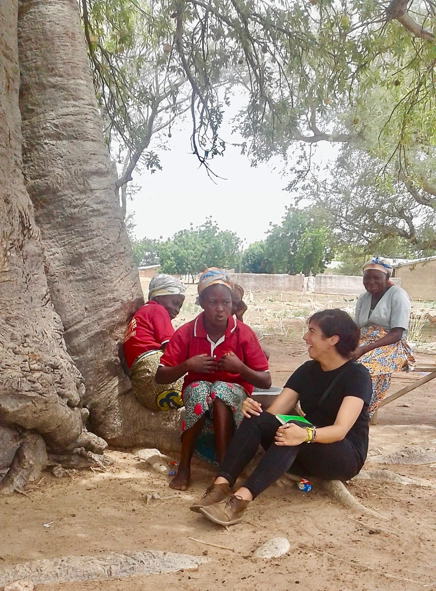
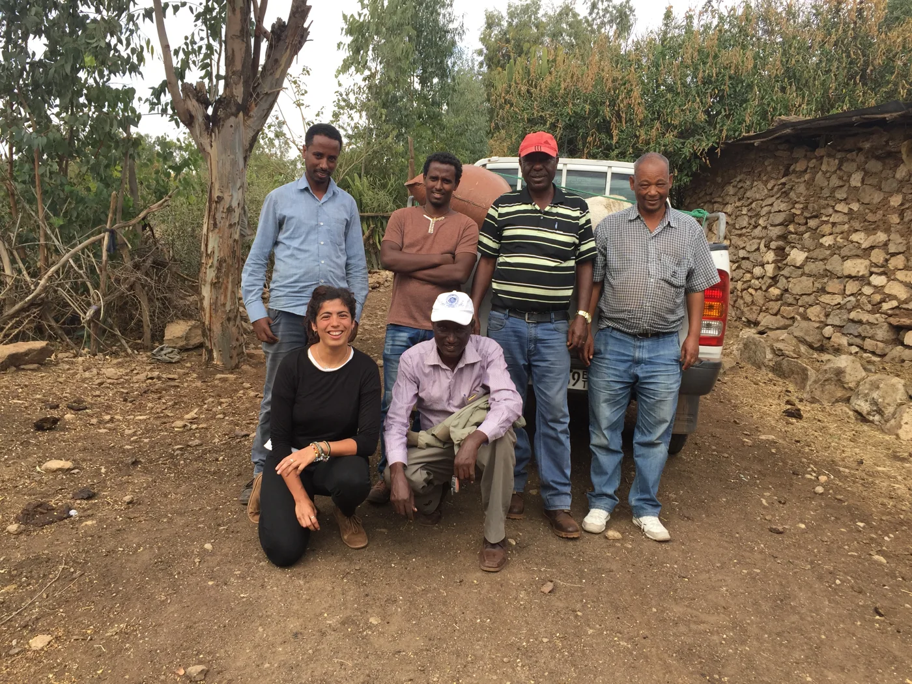
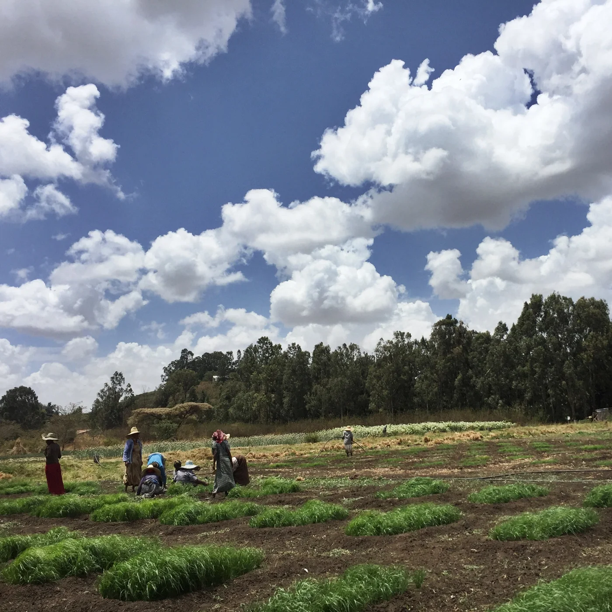
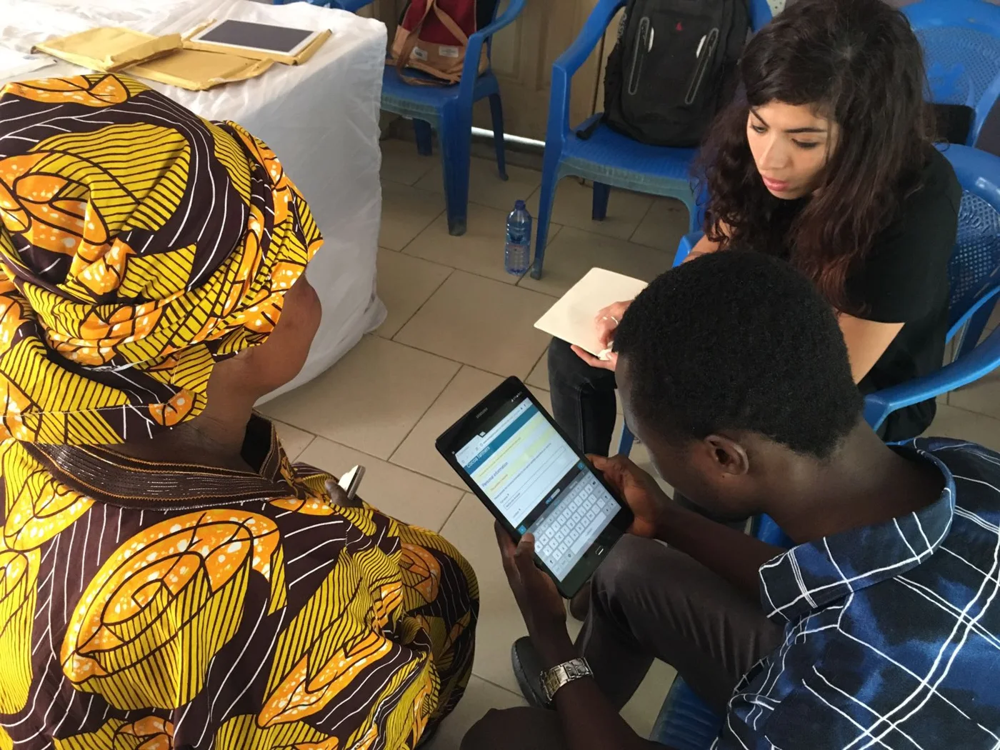
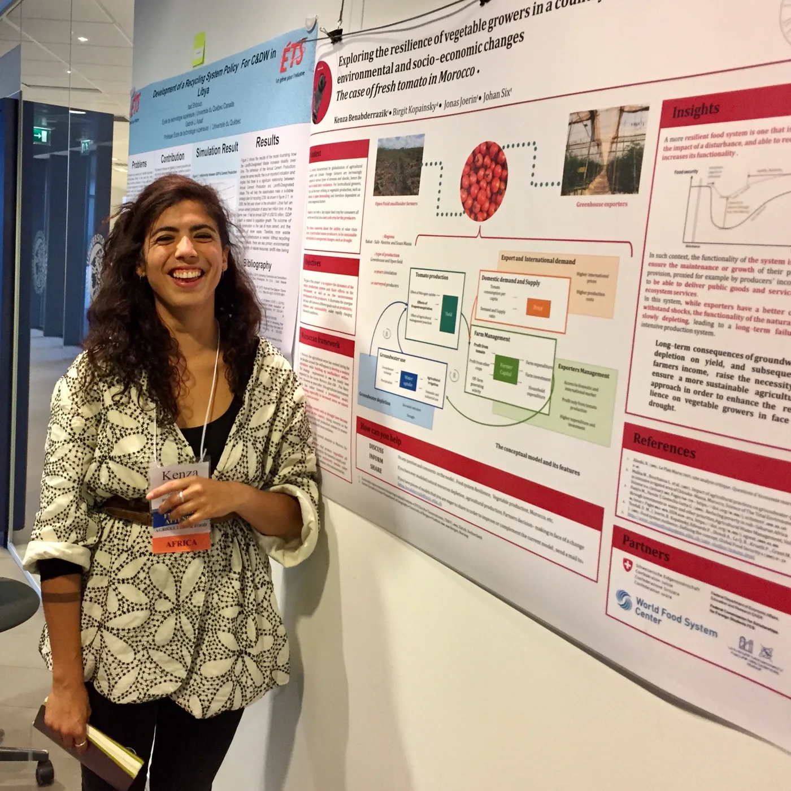

Transformation is Possible: Dr. Kenza Benabderrazik, Food and Agricultural Systems Scientist

Dr. Kenza Benabderrazik is a lecturer and outreach coordinator for the Sustainable Agroecosystems Group at the Swiss Federal Institute of Technology (ETH). She teaches lectures on sustainable agroecosystems and agroecology. Her research focuses on tomato producers’ resilience in the face of weather events and market instability in Morocco and Ghana.
Dr. Benabderrazik conducting a survey encounter assessing the resilience of tomato producers with the Women Farmers Group of Wuru Wematu, Upper East Region, Ghana, 2019.
Dr. Benabderrazik describes her upbringing in a highly scientific family as a benevolent brainwashing. Her genetics professor mother and ophthalmologist father led family outings to forests and botanical gardens. “For me, the environmental component was always important,” she says, “to relate to nature in a big sense.” While she stresses her path through science is not a “Hollywood narrative,” she does notice intriguing patterns in retrospect. As a child, she wanted to be a cook. In environmental consulting, her main projects all related to agriculture and food in some way.
Growing up in Morocco, Dr. Benabderrazik noticed the striking contrast between “wonderful landscapes…beautiful nature, and pollution,” as well as the dissonance between waste production and waste treatment. These social and environmental dynamics fascinated her, offering “so many opportunities to dive into one of those subjects and being able to see a result.” Her interest drove her to get a degree that would “be useful for the spaces around [her].”

Survey crew assessing the resilience of the Teff Value Chain in Ethiopia, 2018.
Studying environmental science and engineering at the Swiss Federal Institute of Technology Lausanne (EPFL), Dr. Benabderrazik pursued her interest in how“we embed ourselves in built…and natural systems.” Over time, she shifted towards waste management and resource efficiency, which was “highly linked to [her] Moroccan life.”
She worked as an environmental consultant after her master’s studies before diving back into research with her interdisciplinary PhD at ETH, studying food systems at multiple scales.

Teff field trials at the Ethiopian Institute of Agricultural Research. Photo by Debre Zeit.
Critical thinking and questioning skills help Dr. Benabderrazik “move in stimulating directions.” She sees her work as a rewarding journey of deconstructing models and seeing how hypotheses change, whether she is elucidating the sometimes-invisible dynamics of the food system or breaking down scientific stereotypes and interrogating her own self-doubt. While she uses dynamic modeling tools to “dive deep into conceptual elements” of the food and agricultural system, her main research medium is human communication. She enjoys exchanging with human beings and conducting interviews, each one an opportunity to interact with people in a way that aligns with her values.

Beginning the survey assessing the resilience of the Cocoa Value Chain in Kumasi, Ghana, 2017.
Dr. Benabderrazik’s work is inherently political, as well as social. Despite the difficulty of criticizing water-depleting policies in her home country, she believes fervently that sustainable transformation of the food and agricultural system is possible. She also hopes that her field will become more inclusive and just in the future. Transdisciplinarity will be taken seriously, care will be embedded into scientific practice, and practitioners will take a systemic thinking approach to resilience and sustainability.
In her own future, Dr. Benabderrazik is excited to dive more into political ecology in the food and agricultural system, focusing more on the power relations within food value chains. She is taking advantage of the pandemic to teach with online guest speakers from all over the world and working on an art-science augmented reality exhibition about food value chains. Like the rest of her work, the exhibition provokes “an intensive dialogue about the importance of sustainable food systems for food security around the world.”

Dr. Benabderrazik presenting her research at the System Dynamics Conference.
*Thank you to Dr. Kenza Benabderrazik for sharing her story and images with 500WS Bern-Fribourg. Click here to find out more about her upcoming exhibition and here to find out more about her resilience studies.
Gabrielle Vance
M.Sc. Geology
From the 500 Women Scientists Bern-Fribourg archive. Originally published 22 April 2021.
Explore more stories